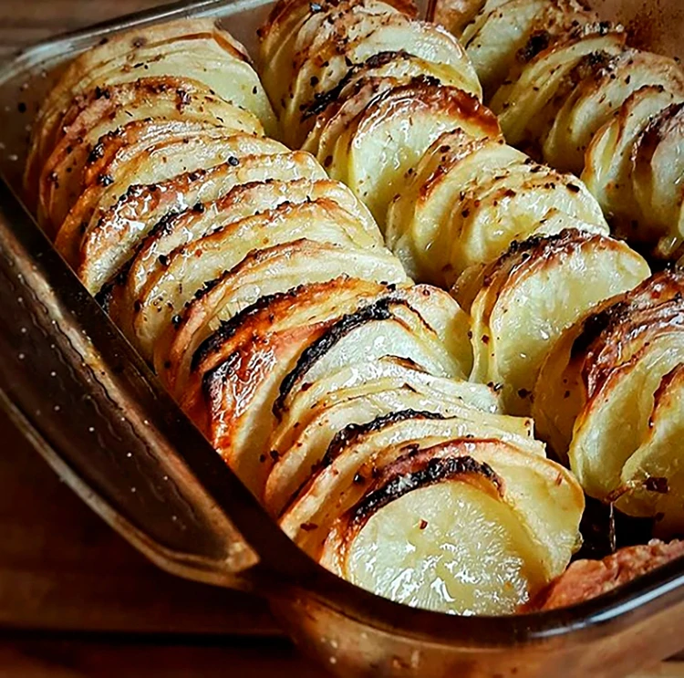
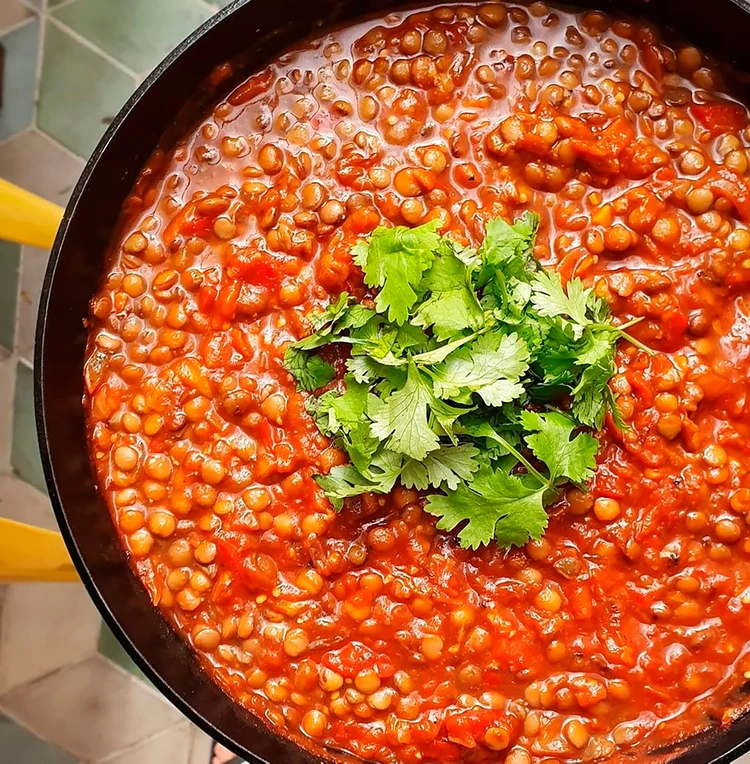

#YoMeQuedoEnCasa
Recetas para hacer en cuarentena:
Que mejor manera de pasar la cuarentena que probando nuestras habilidades culinarias. A continuacion les dejamos ciertas recetas que sirvan para entretenerse, y a la vez poner feliz al paladar.
Pastel de papa y cebolla
- Ingredientes:
- 2 papas
- 2 cebollas
- Aceite de oliva
- Sal y pimienta
Procedimiento
Cortar bien finitas las papas y cebollas e intercalarlas en una fuente. Luego ponerles un poquito de aceite de oliva, sal, pimienta o lo que más guste. ¿Un tip? Va muy bien con romero o tomillo, por ejemplo. También se puede bañar esto con una mezcla de crema y leche, ponerle pedacitos de queso cremoso, jamón o incluso un par de huevos y hacer como una tarta sin masa. Horno pre calentado a 180° por unos 25 minutos o hasta que dore y listo, ¡a disfrutar!
Guiso de lentejas
- Ingredientes:
- 1 lata de lentejas
- ½ cebolla
- ½ morron rojo
- Puré de tomates
- 2 dientes de ajo
- Aceite
- Sal
- Comino
Procedimiento
Calentar a fuego medio bajo una sartén con un chorrito de aceite y mandar cebolla, morrón y sal (también se le puede agregar ají). Revolver y dejar cocinar 4 o 5 minutos. Agregar 1 cucharadita de extracto de tomate (si se tiene) 1 de comino, pimienta, ají picante si se quiere, revolver y poner el ajo. Revolver, cocinar por 2 minutos y añadir 1 pote de puré de tomate o unos tomates bien maduros cortados en trozos. Agregar un poco más de sal, revolver y dejar cocinar hasta que se transforme en una salsa rica, unos 10 minutos.
Una vez que esté lista, añadir 1 lata de lentejas (en caso de tener lentejas frescas, dejarlas remojando el día anterior y luego cocinar con cebolla, ajo, etc a fuego medio bajo hasta que estén tiernas, colar y se pueden guardar en la heladera hasta 1 semana), revolver y cocinar por 2 minutos más. Servir inmediatamente con arroz blanco, un buen puñado de cilantro/perejil o incluso espinaca y listo, ¡a disfrutar!